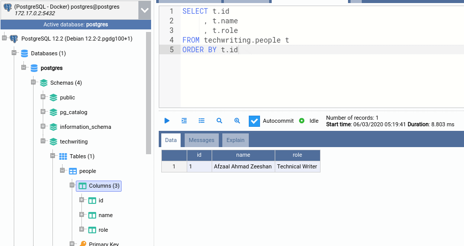

Postgresql

PostgreSQL es un sistema de gestión de bases de datos relacionales (RDBMS) de código abierto, conocido por su estabilidad, fiabilidad y avanzada funcionalidad, que permite almacenar y gestionar datos tanto relacionales (SQL) como no relacionales (JSON). Es una solución popular para diversas aplicaciones, incluyendo web, móviles y geoespaciales, y se distingue por su soporte a estándares abiertos, su capacidad de escalabilidad y su comunidad activa de desarrollo.
Características principales de PostgreSQL
Código Abierto:
Es gratuito, sin costos de licencia, y los usuarios pueden innovar y modificar el código fuente según sus necesidades.
Base de datos relacional y no relacional:
Soporta consultas en SQL estándar y también datos no relacionales, como JSON.
Fiabilidad y Resiliencia:
Incluye características como el registro de escritura previa (WAL) y la simultaneidad multiversión (MVCC), que aseguran la integridad de los datos y el rendimiento bajo alta carga.
Compatibilidad con ACID:
Cumple con los principios de atomicidad, coherencia, aislamiento y durabilidad (ACID) para transacciones de base de datos.
Escalabilidad:
Es capaz de manejar grandes volúmenes de datos y un alto número de usuarios simultáneos.
Funciones Avanzadas:
Ofrece soporte para tipos de datos, índices, subconsultas, activadores y una amplia variedad de extensiones.
Comunidad de Desarrollo Activa:
Es mejorado y mantenido por una comunidad mundial de desarrolladores y empresas.
Ejemplo de CRUD operacion
